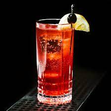

Sloe Joe Fizz

This is what you need to make a sloe joe fizz:
A sloe gin fizz is a refreshing cocktail that’s tart, sweet, citrusy, and bubbly.
Ingredients
- Ice for the shaker
- 2 ounces sloe gin
- 6 ounces pineapple juice.
- 1 ounce fresh lemon juice
- 3/4 ounce simple syrup
- 3 ounces sparkling water, chilled
- Lemon wheel (optional)
- In a cocktail shaker filled two thirds with ice, pour in the sloe gin, lemon juice, and simple syrup. Shake hard for 20 seconds.
- Strain the mixture into a Collins glass and top with the sparkling water. Garnish with the lemon wheel, if using, and serve.